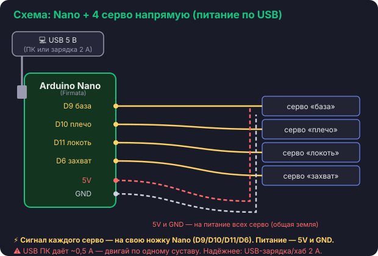

Урок 6 · электроника
Подключение
Цель урока · ГЛАВНОЕ ПО ЖЕЛЕЗУ
Собрать электросхему: Arduino Nano + драйвер PCA9685 + 4 сервопривода.
Питание — только от USB. Это самый важный урок по проводам — делаем не спеша.

🧩 Из чего состоит схема
💻 USB 5 В→
🔌 Nano→ 4 провода →
🎛️ PCA9685→
⚙️ 4 серво
PCA9685 — это «раздатчик» для сервоприводов: Nano говорит ему по двум проводам
(это шина I2C), а он сам формирует сигналы для всех серво и кормит их питанием.
🔌 Шаг 1 — соединяем Nano и PCA9685 (4 провода)
Nano 5V → PCA9685 VCC (питание логики)
Nano GND → PCA9685 GND (земля)
Nano A4 → PCA9685 SDA (данные I2C)
Nano A5 → PCA9685 SCL (такт I2C)
Эти 4 провода — «нервы» схемы. Без SDA/SCL Nano не сможет командовать драйвером.
⚡ Шаг 2 — питание серво от USB
У PCA9685 есть отдельный вход V+ (клеммник) — это питание для моторчиков.
Заводим на него те же 5 В от Nano (а они приходят из USB):
Nano 5V → PCA9685 V+ (питание сервоприводов)
GND Nano и GND PCA9685 уже соединены (шаг 1) — это общая земля.
⚠️ Самое важное про питание
Сервоприводы едят много тока, а USB-порт ПК даёт мало (~0,5 А). Поэтому:
• двигай суставы по одному и плавно;
• для надёжности подключай ПК-USB через зарядку/хаб на 2 А;
• если Nano перезагружается или серво дёргаются — это нехватка тока. Тогда
подай на V+ внешние 5 В (отдельный блок), оставив общую землю.
🔧 Шаг 3 — втыкаем сервоприводы в каналы
Каждый серво — 3-контактный разъём в свой канал PCA9685 (следи за цветом: сигнал —
к контакту «S», земля — к «−»):
канал 0 → база (поворот)
канал 1 → плечо
канал 2 → локоть
канал 3 → захват
Эти номера 0–3 — те самые, что мы пишем в коде (robot.send(0, 90)).
💡 Плата из набора MeArm
Маленькую плату-PCB из набора можно использовать как удобный «переходник» для разъёмов
сервоприводов. Главное — серво всё равно идут в каналы PCA9685, а правило «общая земля»
остаётся.
✅ Шаг 4 — первая проверка
Поставь в Arduino IDE библиотеку Adafruit PWM Servo Driver и залей скетч
«центрировать все» — все 4 серво встанут в 90°. Получилось и Nano не перезагружается?
Значит схема собрана верно!